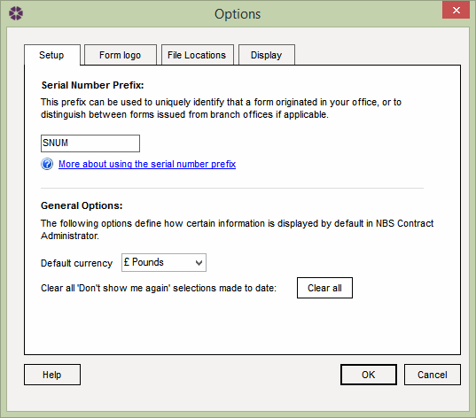

Options: Setup tab |
The Options window allows users to configure NBS Contract Administrator to suit their preferences. To open the Options window select Tools > Options from the menu and select the Setup tab.

The Setup tab consists of 2 sections:
The Serial Number Prefix is used on payment certificates - interim certificates, progress payments, interim payments and all
final certificates. The Serial Number Prefix is generated when one of these Forms are issued. The Prefix is both unique and
sequential to all the jobs across a single database.
For example, the Serial Number Prefix can be used to uniquely identify that a Form originated from the users office, or to distinguish
between Forms issued from branch offices.
Please Note: A Prefix can be set to any sequence of 4 characters by editing the field. The Prefix can be changed at any time and does not effect the overall sequence.
Default currency - Here it is possible to change the default currency to one of the following:
Clear all 'Don't show me again' selections made to date - Useful hints and tips throughout the software can be turned off individually by choosing the 'Don't show me again' check boxes. To make these hints and tips show again, select the Clear all button.
See also:
Options - Form Logo tab
Options - File Locations tab
Options - Display tab
Frequently Asked Questions